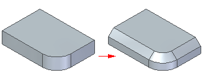

Adding chamfers to part edges
Use the Chamfer commands to apply chamfers to selected edges of a part.

In ordered, the Chamfer command provides options to create:
-
Equal setbacks
-
Angle and setback
-
2 Setbacks
In synchronous, there are two commands:
-
Chamfer Equal Setbacks
The chamfer definition is maintained during model edits.
-
Chamfer Unequal Setbacks
The chamfer definition is not maintained during model edits.
How do I
Construct a chamfer featureEdit or move a chamfer
Construct a chamfer with equal setbacks
Construct a chamfer with unequal setbacks
Look up more details
Chamfer command (feature)Chamfer command bar (ordered)
Chamfer command bar (synchronous)
Chamfer Options dialog box (ordered)
Chamfer Options dialog box (synchronous)
Chamfer Equal Setbacks command
Chamfer Unequal Setbacks command
Chamfer Unequal Setbacks command bar